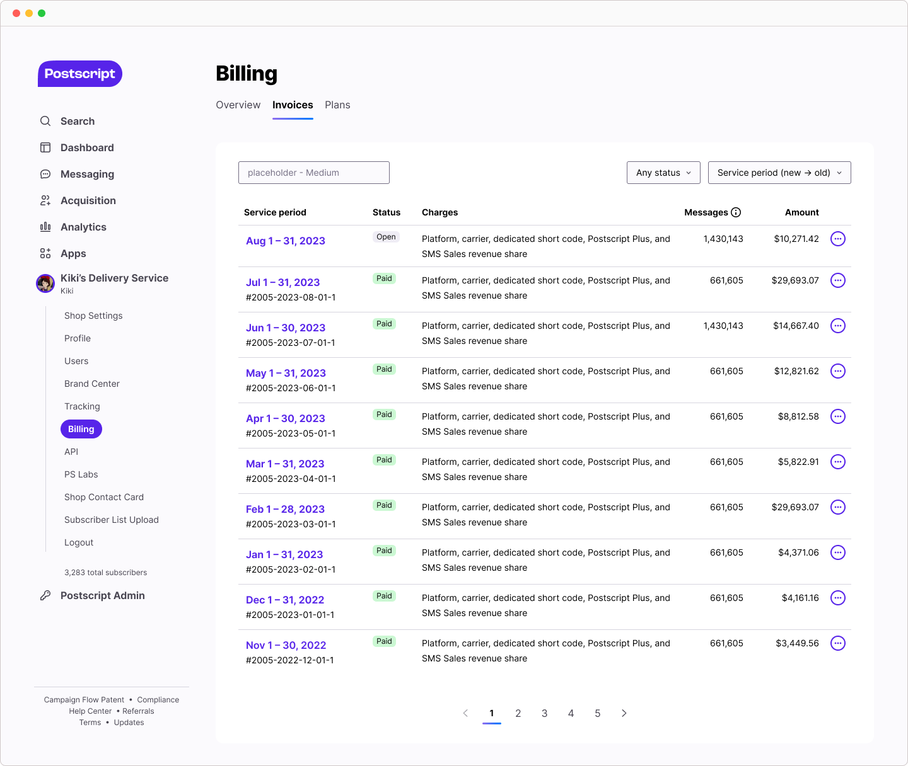
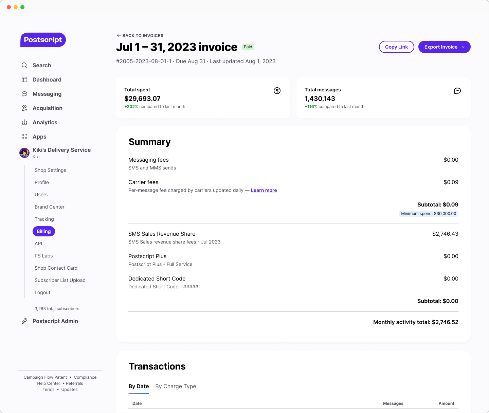
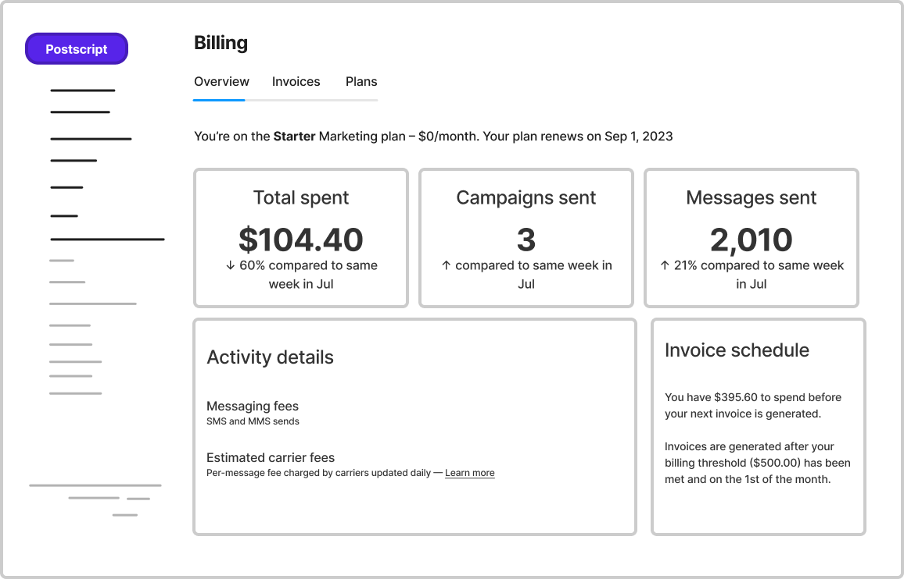
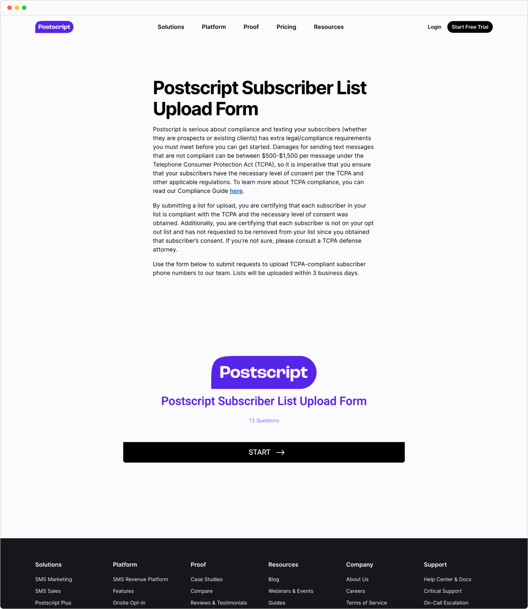
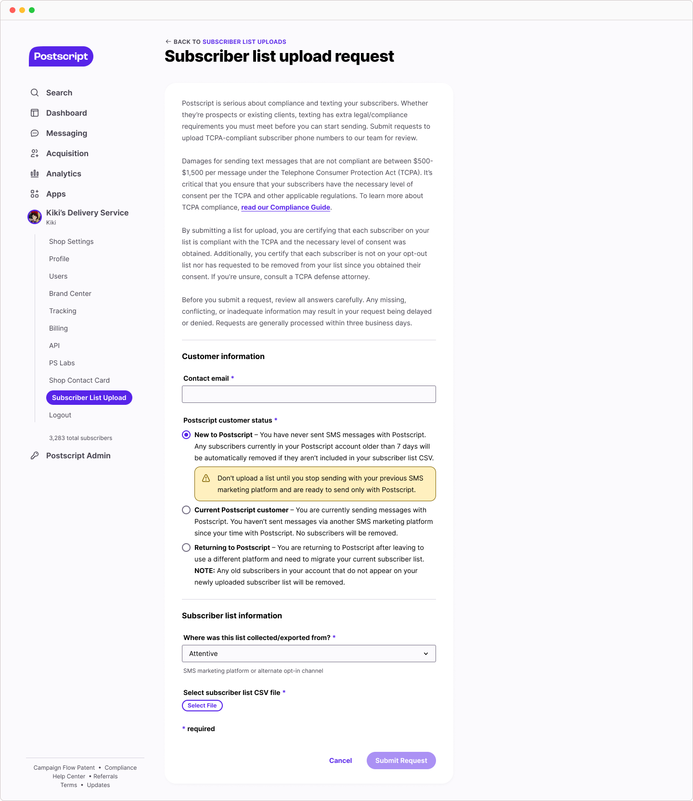
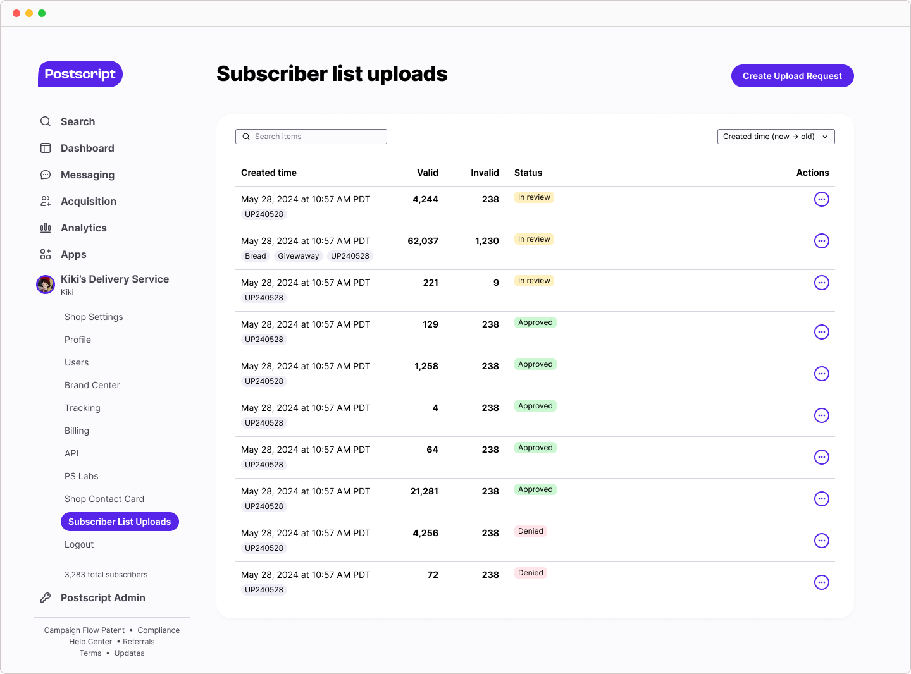

Postscript
B2B product design and DEI · Feb 2023 – Aug 2024
Postscript is an SMS marketing platform for Shopify-powered brands. As a member of the Billing & App Systems (B&AS) product squad, I delivered business-critical features to improve billing and compliance processes.
If I had to pick a word to describe my Postscript work, it'd be "accommodating". Most projects had to account for both internal and external users who weren't all equally tech-savvy, as well as balance change management tradeoffs.
I also served as Postscript's Pride ERG Lead! I strove to give queer voices a platform and develop fun, educational programming to benefit the greater org. 🌈
Accessible invoices
As Postscript moved upmarket, our customers required invoices that fit seamlessly into their enterprise-grade finance operations. Moreover, my research revealed an intriguing gap in the billing space making design well-positioned to put Postscript ahead of its competitors. Competitors' in-app workflows were either minimal or nonexistent — the latter delegated billing duties to in-house concierge personnel.
If any customer, regardless of their plan (i.e. Starter vs Enterprise), requested an invoice file outside the app, our Accounting team had to generate the document for them manually. Not only was this task tedious, it was error-prone.
I advocated to put the customer first in my reimagined invoices ecosystem:
- Invoices – manage and track invoices
- Invoice details – review spend breakdowns and export invoice records
- PDF invoice (info design) – a common file format for easier bookkeeping


Invoices are a universal concept that isn't limited to SaaS, so I looked to my own personal PDF files for layout inspiration! I started with a Google Sheets invoice prototype that was then used to drive feedback conversations with internal stakeholders (e.g. Customer Experience) before further refinement.
Thinking about the end-to-end user journey of how someone might access the invoice in-app, I leaned on scrappy design research methods to evaluate potential directions.

These conversations proved to be beneficial because not only were they fast and cheap, they provided insights that influenced my team's product roadmap. My research built customer empathy among my peers, which helped us determine what to prioritize next.

Outcomes
This initiative was released in phases rather than all at once. PDF invoices was rolled out first to deliver customer value sooner while the larger experience refresh followed suit a few months later.
- Established product differentiation to set us apart from competitors
- Decreased Zendesk tickets related to billing and invoices
- Increased financial transparency boosted customer satisfaction and trust
Betting on in-app subscriber list uploads
When making the switch to Postscript, customers often bring a list of SMS (text message) subscriber contacts from their previous service provider that they want to migrate to our platform. I identified a product opportunity to move Postscript's subscriber list upload request workflow — accessed through an embedded third-party form on the marketing website — to within the app.
Our internal Compliance team audited and approved every list prior to uploading it to the app. This meant any found data discrepancies effectively blocked users from sending until they got resolved. The subscriber list upload procedure is a cornerstone of a customer's onboarding journey that can make or break early impressions of Postscript.
Not only did my design solution fix security vulnerabilities, it also produced a foundational, components-based infrastructure, lending itself to future iteration.


My design solution consisted of three parts that were subjected to internal proxy user testing prior to launch:
- Subscriber list uploads – a handy list of all requests and key details
- Create upload request – submit a request for Compliance team review
- [Compliance team only] Subscriber lists tool – approve or deny requests

Outcomes
Although I left prior to launch, my key stakeholder, Senior Manager, Messaging Ops & Strategy, described the release as a "significant improvement" in:
- Customer experience by moving the workflow in-app > marketing website
- Security by eliminating a dependency on third-party software
- Risk reduction by introducing an automated list audit tool
Team: Becky Guererri, Taylar Cobb, Ben Saunders, Brian Swank, Christian Agha, Adam Fellon, and Tania Smith.